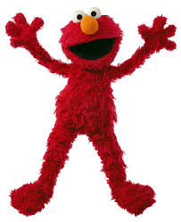

Elmo

이 친구의 이름은 엘모 (Elmo)!!
좋아하는 것 : 배우기, 웃기 , 책보기 ,놀기 !
굉장히 이상적인 캐릭터죠 똑똑하고
잘노는 친구
잘웃어요 굉장히 :)
그래서 전염되기 쉬운 웃음의 소유자 입니다.
#include <stdio.h>
int main(void){
printf("Sesame Street");
}
《세서미 스트리트》(영어: Sesame Street)
미국의 어린이를 위한 텔레비전 교육 프로그램 및 프로그램의 무대가 되는 가상의 거리 이름이다.
1969년 미국에서 처음 방송된 이래 40년 이상에 걸쳐 140개 이상의 국가와 지역에서 사랑받고 있다.
이 친구의 이름은 엘모 (Elmo)!!
좋아하는 것 : 배우기, 웃기 , 책보기 ,놀기 !
굉장히 이상적인 캐릭터죠 똑똑하고
잘노는 친구
잘웃어요 굉장히 :)
그래서 전염되기 쉬운 웃음의 소유자 입니다.
이 친구의 이름은 빅버드(Big Bird) !!
키가 무려 248cm의 새랍니다.(진짜 크네)
좋아하는 것 : 노래하기,
사람들을 기쁘게 하기,
문제를 해결하는 것 입니다.
싫어하는 것 : 실수하는 것 (완벽주의 인듯...)
빅버드는 엄청 크지만
속은 완전 어린이 입니다!!!
이 친구의 이름은 쿠키몬스터
(Cookie Monster)!!
엄청난 쿠키 애호가입니다!!
좋아하는 것 : 과일, 야채 당연히 쿠키!!
쿠키몬스터는 보기와 다르게
굉장히 섬세하고 철학적이에요!
'쿠키'라는 것을 굉장히 철학적으로 보고 다가갑니다.